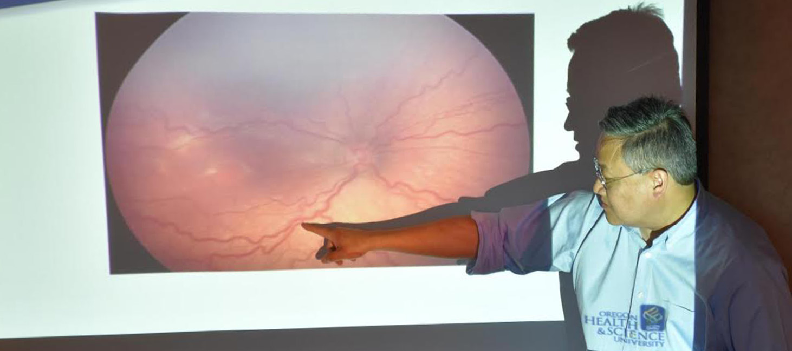
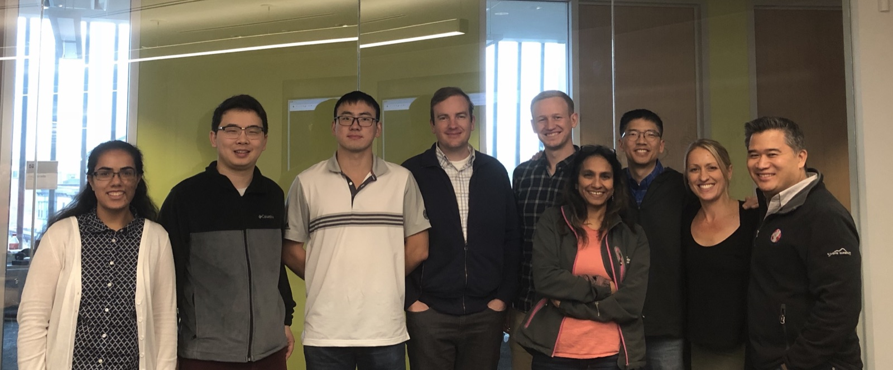
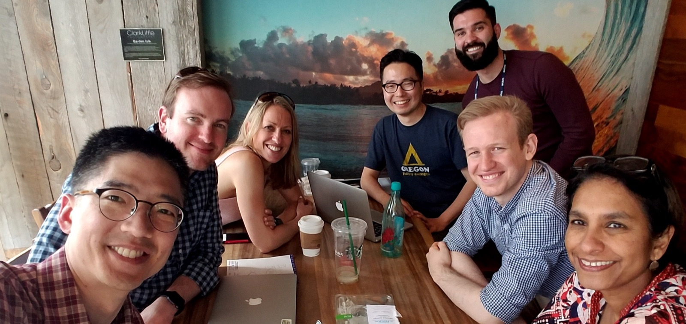
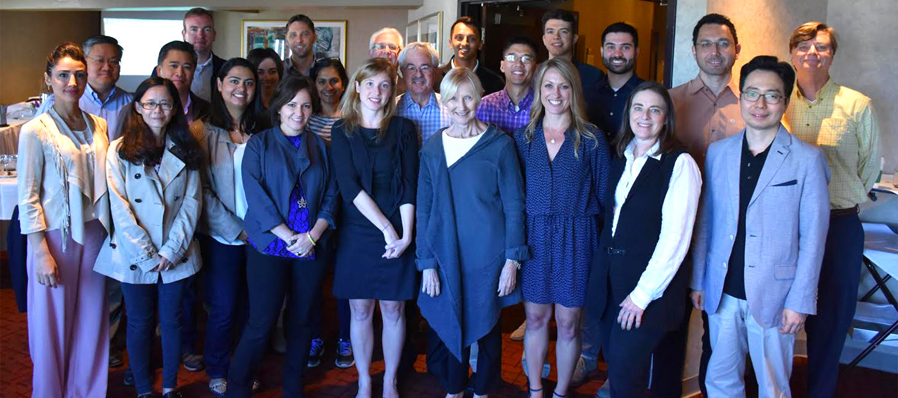
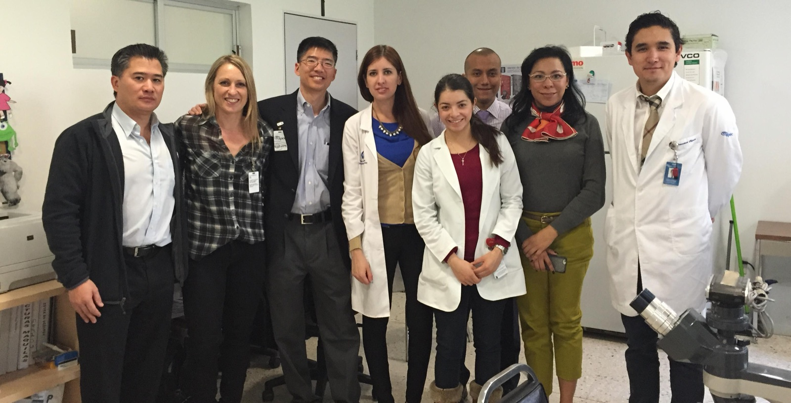
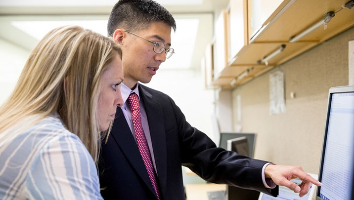
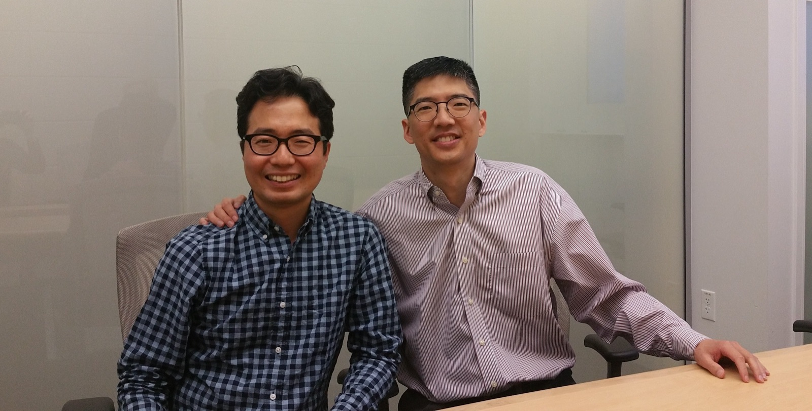
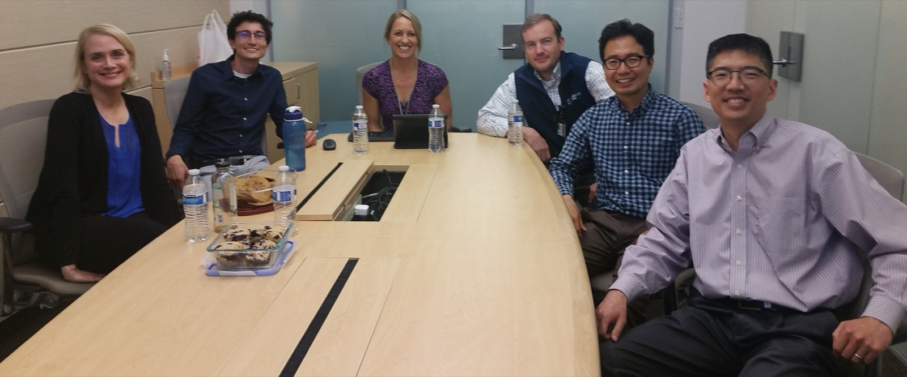

About i-ROP
Imaging and Informatics in Retinopathy of Prematurity
ROP is a leading cause of childhood blindness in the United States and throughout the world. The goal of this consortium is to develop better methods for diagnosing, understanding, and treating ROP through computer-based image analysis, genetic analysis, and biomedical informatics analysis. The consortium is led by Oregon Health & Science University (OHSU), includes collaborators from 12 academic institutions throughout the world, and has been funded by the National Institutes of Health since 2010.
The i-ROP team
Collaborators from across the consortium. See everyone who works on i-ROP.

OHSU, MGH, NEU i-ROP team photo from October 1, 2018 
Aaron Coyner, Susan Ostmo, Michael Chiang, Pete Campbell, Jayashree Kalpathy-Cramer, James Brown and Sang Jin Kim: OHSU i-ROP team photo from the conference room 
Tom Lee, Paul Chan, Pete Campbell, Jerome Rotter, Audina Berrocal, Michael Chiang, Susan Ostmo, Jayashree Kalpathy-Cramer, Charles Simmons and Kemal Sonmez: i-ROP consortium photo Tom Lee discussing vascular features in the retina associated with plus disease 
Paul Chan, Susan Ostmo, Michael Chiang and Maria Ana Martinez-Castellanos: international team from APEC involved with the i-ROP consortium 
Michael Chiang and Susan Ostmo: OHSU i-ROP team 
Mike and Sang at a farewell lunch 
Collaborators involved with the i-ROP consortium at Sang's farewell lunch